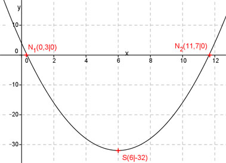

Aufgabe 40 Welche Koordinaten haben der Scheitelpunkt S und die Nullstellen N der folgenden Funktion? y = x2 - 12x + 4 Ermitteln der Scheitelpunktform: Quadratische Ergänzung: y = x2 - 12x + 36 – 36 + 4 mit x2 - 12x + 36 = (x - 6)2 y = (x - 6)2 - 32 S abgelesen: S(6|-32) Nullstellen: y = 0 y = x2 - 12x + 4 p, q – Formel : p = -12 ; q = 4 x1,2 = 6 ± 5,7 x1 = 6 – 5,7 = 0,3 x2 = 6 + 5,7 = 11,7 N1(0,3|0) ; N2(11,7|0) 